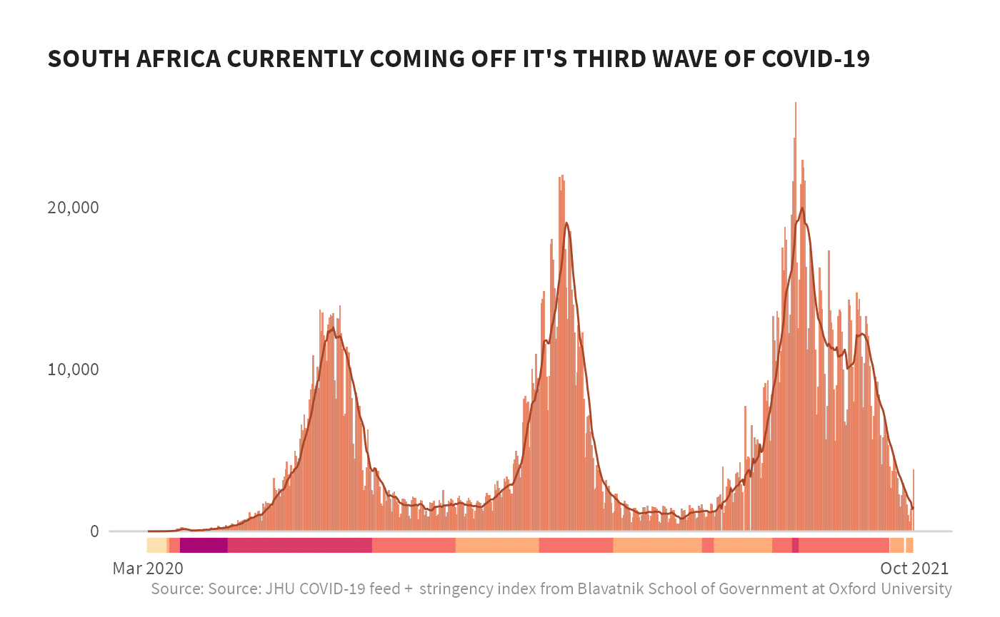

This vignette provides an overview of how to access and use both COVID case data as well as stringency data. We’ll be using two functions from COVIDutilities to access both the case counts data from a JHU GitHub Repo as well utilizing an API from Oxford Blavatnik School of Government.
Let’s get started by loading the packages we will need.
library(tidyverse)
library(COVIDutilities)
library(glitr)
library(extrafont)
library(scales)
library(lubridate)Pulling both sets of data are pretty easy - you just have to run two lines of code. By default, both pull_jhu_covid() and pull_stringency_index() are only returning PEPFAR countries. With pull_stringency_index(), you have the option of dates to run the API over. We can leave the defaults the same, starting the API from the start of collection (2020-01-22) through today.
#COVID cases (JHU)
df_covid <- pull_jhu_covid()
#> Joining, by = "countryname"
#Government Response
df_stringency <- pull_stringency_index()All the functions in COVIDutilities convert the names of the countries to the PEPFAR naming conventions so the data can be easily combined with one another as well as with PEPFAR data.
#join datasets
df_viz <- left_join(df_covid, df_stringency)
#> Joining, by = c("countryname", "date", "iso")Now that we have the data joined together, we’ll plot these together, combining the COVID case counts as an area plot and add a run of the stringency index below that for a few countries.
#limit to just South Africa
df_viz <- df_viz %>%
filter(countryname == "South Africa",
date >= "2020-03-01")
df_viz %>%
ggplot(aes(date, daily_cases)) +
geom_col(fill = burnt_sienna, alpha = .8, na.rm = TRUE) +
geom_hline(aes(yintercept = 0), size = 0.5, color = grey20k) +
geom_line(aes(y = rollingavg_7day), color = si_palettes$burnt_siennas[7], #size = 1,
na.rm = TRUE) +
# geom_vline(xintercept = qtrs, size = 0.5, color = grey20k) +
geom_rug(aes(color = color), sides="b", na.rm = TRUE) +
scale_y_continuous(label = comma) +
scale_x_date(date_labels = "%b %Y",
breaks = c(as.Date("2020-03-01"), today())) +
scale_color_identity() +
labs(x = NULL, y = NULL, fill = "Stringency Index",
title = "SOUTH AFRICA CURRENTLY COMING OFF IT'S THIRD WAVE OF COVID-19",
caption = "Source: Source: JHU COVID-19 feed + stringency index from Blavatnik School of Government at Oxford University") +
si_style_nolines()